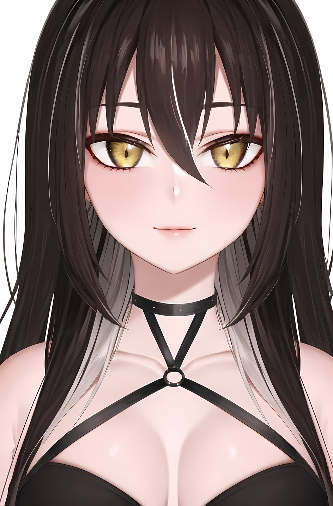

F01 / ABOUT
Добро пожаловать в N109Z
На этом сервере собрались девочки, которые иногда любят кайфануть в майне со своими зрителями.
РЕЖИМVanilla
ВЕРСИЯ26.2
ДОСТУПWhitelist
02 / PLAYERS


03 / ACCESS
Доступ
Проходка покупается за баллы канала на Twitch и предназначена лично для владельца. Покупать проходку в подарок или передавать её другим игрокам нельзя.
Поддержать проект
Финансово поддержать проект можно здесь:
04 / RULES
Правила сервера
01Уважайте друг друга.
Без оскорблений, травли, намеренных провокаций и токсичности. Шутки между друзьями — ок, пока всем участникам ситуации действительно весело.
02Не трогайте чужое без разрешения.
Не крадите, не ломайте и не присваивайте чужие постройки, ресурсы, предметы и территории.
03Возмещайте последствия своих приколов.
Если вы намеренно или случайно нанесли ущерб чужой ферме, складу, постройке или другому имуществу — восстановите всё до исходного состояния или верните владельцу потерянные ресурсы. Если из-за ваших действий игрок погиб и потерял вещи — верните потерянные предметы.
04Без читов и нечестных преимуществ.
Запрещены читы, X-Ray, дюпы и другие способы получить преимущество нечестным путём. QoL-моды и ресурспаки допустимы, если они не дают игрового преимущества.
05Не стримснайпьте.
Не используйте информацию из чужих трансляций во вред игроку, не приходите специально мешать стриму и не раскрывайте намеренно то, что человек пытается скрыть от зрителей.
06Уважайте личные границы.
Не распространяйте личную информацию участников и не выносите за пределы сервера то, чем человек поделился приватно.
07Не мешайте чужой игре.
Крупные изменения территории, вмешательство в чужие проекты и масштабные совместные активности лучше заранее согласовать с теми, кого это касается.
08Согласованные приколы — ок.
Если участники заранее договорились о каком-либо пранке, PVP или другой активности и все понимают условия — никаких проблем. Если человеку перестало быть весело и он просит остановиться — останавливаемся.
09Никто никому ничего не должен.
Нет обязательного онлайна, расписания или требований постоянно играть на сервере. Зашёл — кайфанул — вышел.
10Администрация оставляет за собой последнее слово.
Если возникла ситуация, которая явно портит игру другим участникам, администрация может вмешаться даже в случае, если конкретный случай не описан в правилах.